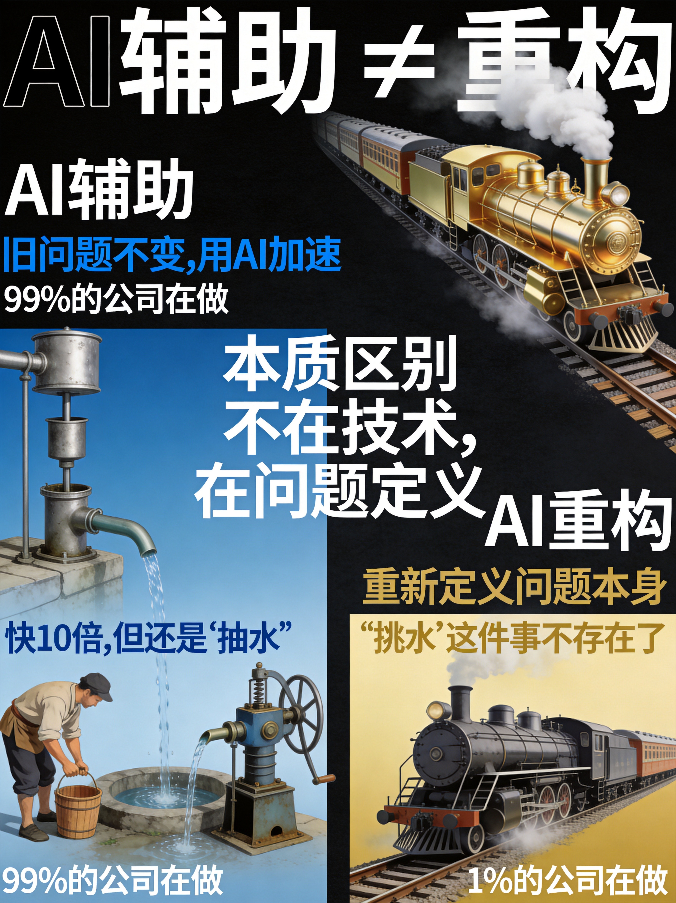
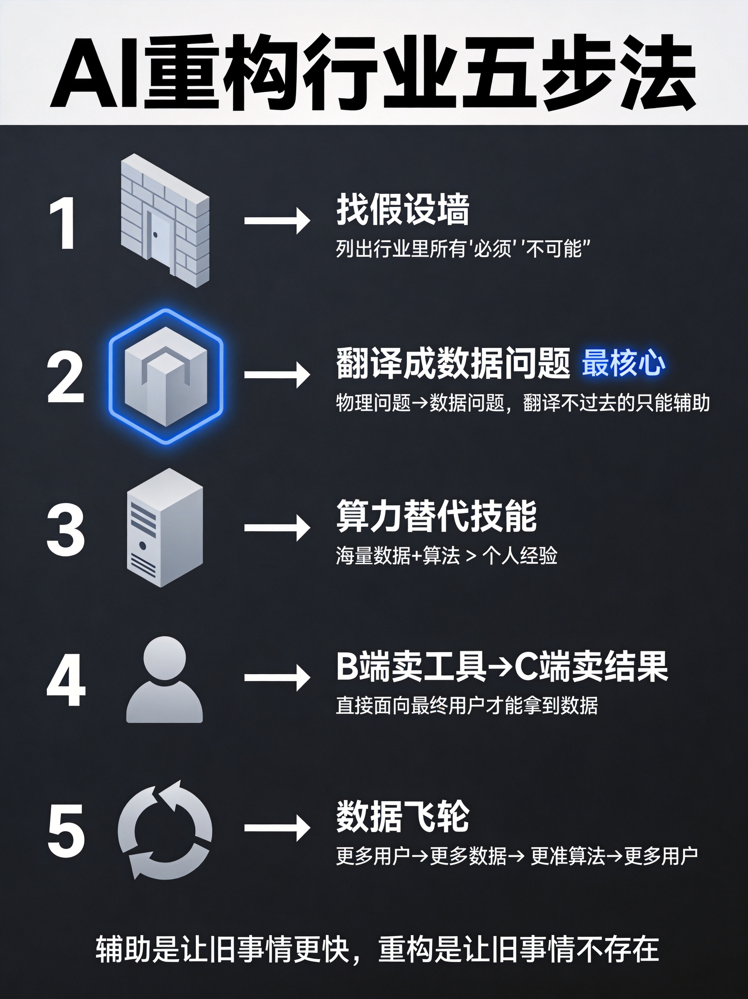

小K·AI行业数据分析 | 2026-06-30
一家AI画图公司，跑去造了一台医疗扫描仪。
听着像跨界瞎搞？6月17号，Midjourney正式成立医疗部门，发布了一台全身超声扫描仪。站进水池里，60秒，全身3D影像出来了，成本大约是核磁共振的十分之一。
很多人说，这是AI画图公司跨界做医疗。
我告诉你，不是。
这件事比"跨界"严重10倍——Midjourney在用AI公司的底层逻辑，把一个传统行业重新定义一遍。而这套逻辑，不止适用于医疗。
今天这期，我把Midjourney这件事拆透，更重要的是，给你一套可以套到任何行业的AI重构方法论。
老规矩，上来先交叉验证。5个确认属实的，5个被严重夸大的。
确认属实的：创始人David Holz亲自挂帅。跟Butterfly合作，合同总价值最高7400万美元。35.8万个换能器，全身扫描60秒。21台服务器、2千万亿次算力重建图像。旧金山联合广场开Midjourney Spa，2300平米四层楼，冰岛蓝湖温泉的设计团队做的。
被夸大的："端了核磁共振的饭碗"——不准确，超声看骨头不行，重度肥胖穿透也不够。"AI生图技术做医疗影像"——不对，核心是硬件阵列加算力重建，跟画图没直接关系。"已经拿了FDA认证"——没有，Midjourney自己把定位退回到了"消费健康"。最关键的——目前人体测试还不到20例。"马上就能商用"——早着呢。
一句话：事是真事，但别吹得太离谱。真正的看点不是这台机器有多神，而是Midjourney做这件事的思路，跟传统医疗设备公司完全不是一个物种。
说到AI+行业，大多数人想的是——用AI提效、降本、自动化。
但这叫AI辅助，不叫AI重构。
打个比方。蒸汽机发明了，有人用蒸汽机抽水，比人挑水快10倍——这叫辅助。但有人用蒸汽机造了火车，根本就不需要"挑水"这件事了——这叫重构。
本质区别不在技术，在问题定义。
辅助是：旧问题不变，用AI加速。重构是：重新定义问题本身。
99%的公司做的都是辅助。但真正能颠覆行业的，永远是那1%做重构的。

那重构具体怎么做？我研究了Midjourney、Tesla这些原生科技公司的共同点，总结出了AI重构行业五步法。一步一步给你拆。

每个行业都有一些所有人默认的"不可能"——不是真的做不到，是没人想过可以不一样。我把它叫"物理假设墙"。
医疗影像行业，所有人默认四件事：设备必须贵所以放医院里；必须医生操作；生病了才查；赚钱靠卖设备。
每一条都是一堵墙。墙里的人觉得天经地义，墙外的人看了觉得——为什么不能不一样？
找法很简单：把你行业里所有带"必须""一定""不可能"的句子列出来，每一个都是潜在的重构点。
这是最核心的一步。
AI的本质能力是从海量数据里找规律。所以AI重构的前提是——你能不能把这个行业的核心问题，从"物理问题"翻译成"数据问题"。
医疗影像：从"如何用超声波看清人体内部"→"如何从几百万条声波回波里重建3D结构"——可以翻译，可以重构。
翻译能力，就是一个行业被AI重构的潜力指数。翻译不过去的，暂时只能辅助。
传统行业的瓶颈通常是人——人的经验、人的技能、人的注意力。稀缺、贵、不可复制。
AI重构的思路：用海量数据加算力，把人的技能工业化。
不是复制一个大师，而是用一万个普通传感器加算法，做出比大师还好的结果。
顶级超声医生，20年经验，手持探头，一次看一个角度。Midjourney，50万个传感器同时工作，360度无死角，算力直接重建。不是AI比医生厉害，是数据量和维度完全不在一个量级。
当传感器的成本降到原来的几分之一，数量做到原来的上百倍，整个行业的逻辑就全变了。
西门子的逻辑：造一台几百万的MRI，卖给医院，医院给病人做检查。赚的是设备钱。
Midjourney的逻辑：造一台便宜的扫描仪，开在商场里、开水疗中心，你直接来体验，按次收费、按月订阅。赚的是服务费。
David Holz原话："扫描的成本几乎为零，真正的约束是物理空间的容纳上限。"
更多人扫描→更多人体数据→重建算法更准→体验更好→更多人来扫描。
传统医疗设备公司进不了这个循环——他们卖设备，数据在医院手里，医院之间不共享，永远没有飞轮。
不是Midjourney的技术比西门子强，是Midjourney的商业模式天然就能形成数据飞轮，而西门子的商业模式天然就形成不了。等飞轮转起来，传统巨头再想追，不是技术追不上，是商业模式追不上。
五步法讲完了，过一个行业你感受下。
健身行业：假设墙是"必须去健身房、必须有教练"。翻译成数据问题——"如何根据身体和运动数据实时计算最优方案"，可以翻译，可以重构。算力替代——摄像头加动作捕捉，实时纠正每个动作。B转C——从卖年卡变成按效果付费。飞轮——用户越多算法越准，算法越准效果越好，效果越好越多人来。
法律、教育，逻辑一模一样。你拿五步过一遍就知道了。
今天拆了Midjourney，给了你五步法。
但我想说的最后一句话不是关于Midjourney的——
每个行业都有人用AI做辅助，也有人在找重构的切入点。区别很简单：大部分人用AI让旧事情更快，少部分人用AI让旧事情不存在。
你想知道你的行业会不会被重构？拿五步法过一遍。那些"必须""一定""不可能"的背后，就是答案。
数据来源：Midjourney官方公告、TechCrunch 2026.06.18、Bloomberg 2026.06.19（Midjourney Medical成立及技术参数）；Butterfly Network Q2财报电话会议（合作条款）；MetaEra 2026.06.18、The Information 2026.06.20（人体测试不足20例）；Yole Développement《MEMS for Medical Ultrasound 2024》（CMUT出货量增速及市场数据）；GetLatka/FrontierLedger多方统计，B级估算（团队规模107-170人）；The Information/官方技术披露（计算规格17GB/s、21台服务器、2 petaflops）